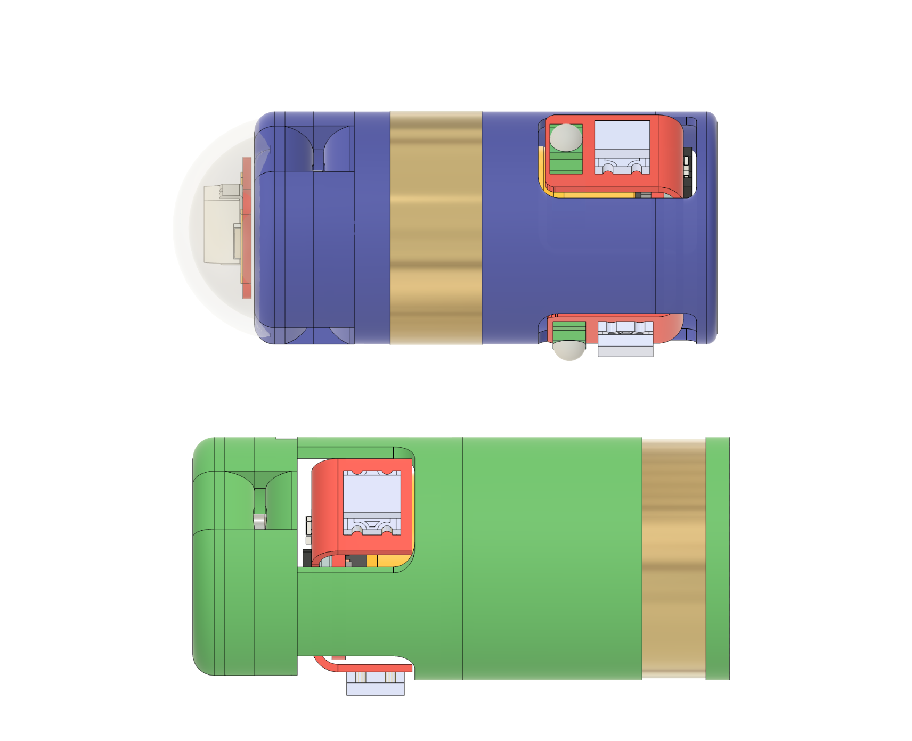
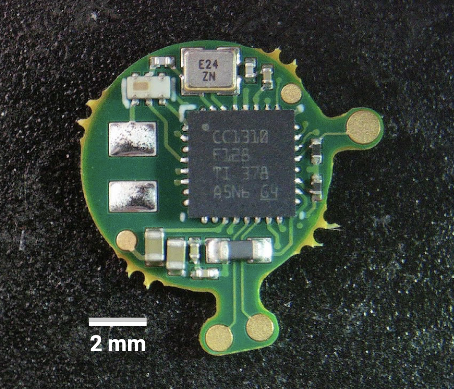

Lab for Translational Engineering, 2024–2025
From June 2024 to July 2025, I led the development of an ingestible two-capsule system for the closed-loop detection and treatment of upper gastrointestinal bleeding (UGIB). Patients at risk of UGIB would ingest both robotic capsules, initiating a four-week monitoring period. The first capsule (Capsule 1) continuously senses the gastric environment, while the second (Capsule 2) delivers tranexamic acid (TXA) upon confirmed detection of bleeding.
Capsule 1 employs optical spectroscopy to detect bleeding, using three LED–phototransistor pairs to emit light and measure reflected light intensity. Pilot in vivo studies demonstrated that the presence of blood produces a measurable decrease in reflected light, providing a reliable biomarker for detection. To process data and communicate results, I designed a custom CC1310 microcontroller PCB to interface with preexisting, lab-designed sensing and antenna PCBs. Since Capsule 2 could not accommodate RF hardware, I implemented an optical scheme for inter-device communication: Capsule 1 emits pulsed light signals upon detecting blood, which Capsule 2 registers to trigger its release sequence.

To enable treatment, I manufactured custom TXA pellets in-house using resin molds and clamps, formulating them with MCC and gelatin to achieve a 90% yield and good structural integrity. In Capsule 2, I engineered a spring-loaded plunger system constrained by a stainless steel foil seal and designed a silver–silver chloride electrode trigger that electrochemically dissolves the seal to release the drug. For safe gastric residence, I developed superelastic nitinol arms that deploy in the stomach yet remain enclosed in dissolvable gelatin capsules for safe swallowing, and I implemented an electrochemical disassembly mechanism that allows the arms to detach after treatment. On the firmware side, I wrote custom C algorithms that established dynamic sensing thresholds, managed inter-device RF and optical communication, and synchronized triggering between capsules. Finally, I executed in vivo studies to validate pharmacokinetics of the custom TXA tablets and to demonstrate closed-loop function, showing that the system could autonomously detect bleeding, communicate, and deliver therapy.
Citation:
Chen, J.†, Sergnese, A.†, et al.,
Traverso, G.*
"An Ingestible Platform for the Closed-Loop Diagnosis and Treatment of Gastric Bleeding."
(manuscript under review).
†equal contribution; *corresponding author